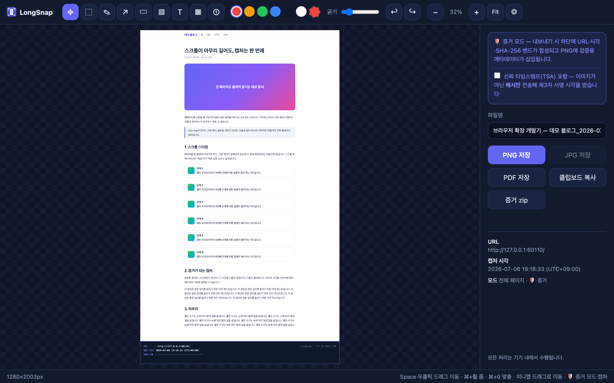
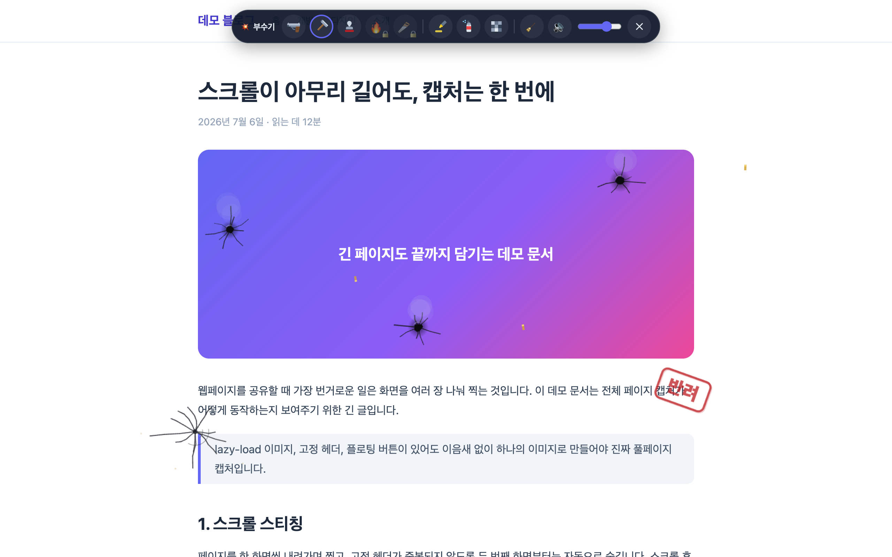

Full-page capture — scroll-stitches the entire page, handling lazy-loaded content, sticky headers, and inner-scrolling documents.
Annotate & export — crop, pen, arrows, highlights, mosaic, numbered badges; export to PNG / JPG / PDF / clipboard, or skip the editor with quick save.
Proof shots — embeds the URL, capture time, and a SHA-256 pixel hash into the image, with an optional RFC 3161 trusted timestamp and the page's original MHTML. Anyone can verify integrity on the bundled verification page.
Batch capture — paste a list of URLs and get full-page captures as a zip or a single PDF.
💥 Destroy mode — blow off steam with a playful on-page overlay (and capture the aftermath).

The editor with a full-page capture — the evidence band at the bottom seals URL, time, and hash.

Destroy mode: doodles stick to the page and appear in captures.
Privacy
Everything runs on your device. Captured images, page contents, and URLs are never sent to
any server. Read the full Privacy Policy.
Pricing
Free: unlimited full-page capture and editing, 3 proof shots per month, batch up to 3 URLs. Lifetime license ($11.99, one-time): unlimited proof shots and batch capture, plus all
destroy-mode weapons.